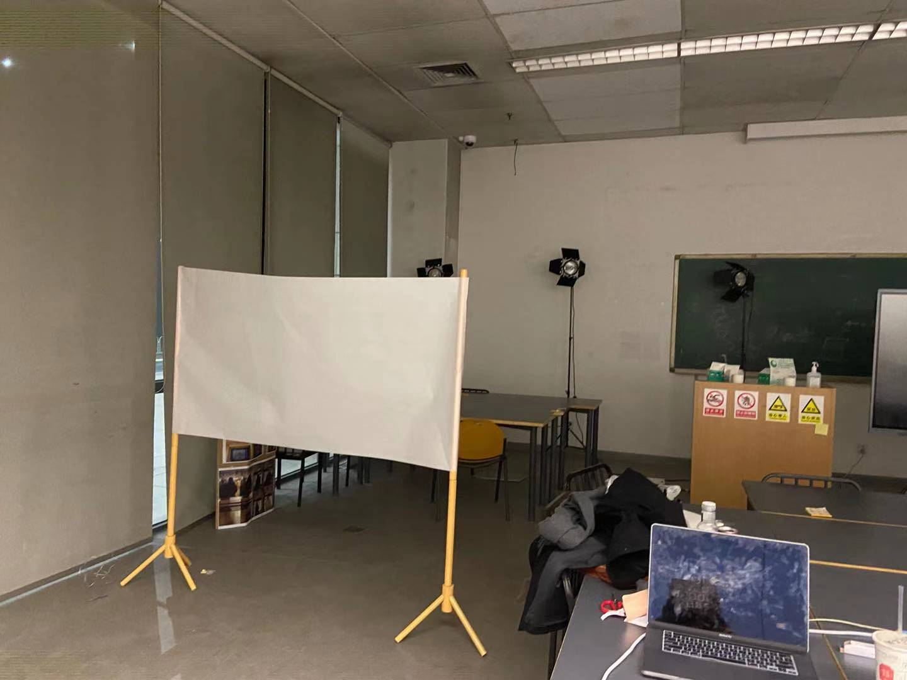
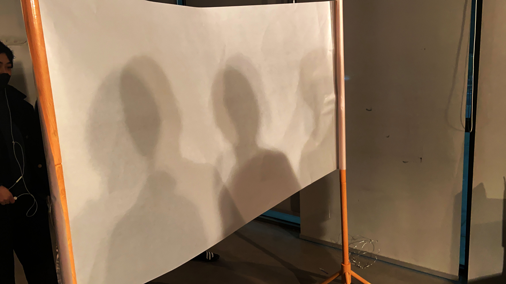

After the small scale prototype, I do have a basic overview on my project, then the next step is try some protytype with real person and ask their experience.
Setting:

Testing:

One experiencer on one side and three people(not experiencer)on the other side.
So for this project I will like to use shadow to question conformity, when people come together they are usually fill a kind of social pressure, through using shadows I want to questing and exposing how social pressure can often lead to less self-expression than one will do individually.
By changing the lights to change the shadow to see people's personal shadow behavior. When there are people doing the same behavior that experiencer is more likely to follow them. After the test I asked the expereincer's expereince, she said other people's shadow have some degree of directionality，also when there are lots of shadows she will have a moment of losing in the shadow. I think the test results works ok.